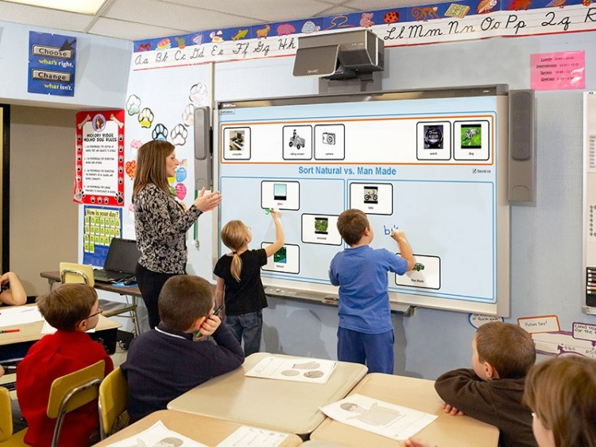

Advantage
Computers are important in education because they force us to reconsider how people learn, how they are empowered, and what the nature of learning and useful information is. We cannot avoid the presence of computers in our schools because they are forcing educators to re-evaluate the very nature of what and how we teach. In 1998, the Office of Technology Assessment reported there were approximately 5.8 million computers in schools across United State’s or approximately one machine for every nine students (Provenzo, Brett, & McCloskey, 1999).
An advantage of having computer-assisted instruction in the classroom is that the computer can serve as a tutor. Teachers can only aid students in the learning process so far. Computers can assist teachers and act as a tutor for the students who are falling behind. A report entitled Computer Advantages: Tutoring Individuals, states “with computers as tutors, no student will be overwhelmed because he or she is missing fundamentals the computer will repeat material until each lesson has been sufficiently mastered” (Bennett, 1999, p. 3). Teachers do not have the time to repeat lessons over and over again. The writer believes it is important to give all students in the classroom the opportunity to adequately learn the lessons, and with computers acting as tutors they can.

One of the biggest problems in the world today is illiteracy. Each year thousands of students graduate from high school reading at the elementary school level, or not reading at all. Every student should have the opportunity to receive additional assistance when they need it. Teachers are doing the best they can with literacy issues in the classroom, and computers can reach the students that the teachers cannot. The article entitled “Computers as Tutors” discusses Annaben Thomas (Bennett, 1999) who was unable to read despite her years in the New York City school system. After leaving school, she was taught by tutors and had enrolled in library literacy programs and adult education classes trying to overcome her handicap. After doing everything she still had not learned to read, until she enrolled in a computer course program that taught her to read and write. Because of success stories like this it is crucial to support the use of computer technology in the classroom.
Building partnerships with quality training providers, and combining this with a dedicated experienced technical team and support staff, Virtual College provides the perfect blended learning environment, offering anyone the chance to take their online training to the next level.
Encourages peer to peer learning: Teachers can insist students create virtual study groups using computers to share or ask academic information. With the many social applications available, it is very easy to connect students using computers. Naturally, some students who are too shy to connect with others in the real world, may find it less challenging to connect virtually.Thus teachers can spot such students and encourage them to create a peer to peer computer discussion platform which students can use while in the classroom or outside the classroom. There’re some tools like Piazza which help teachers achieve this goal in their classroom. Students learn easier when they get examples and illustrations from their fellow students. So as a teacher it is very important to mix clever students with moderate students or slow learners. You can keep the group small, between 4 – 6 students per group.
Improve students writing skills: Many students have issues with proper grammar and using a computer in the class will partly help in correcting that issue. Though this will not make them the best writers, but it will help them write grammatically correct sentences easily and learn faster. Teachers will still have to take the extra step to guide their students on how to write well composed sentences, because a computer can only do the basics, i.e; spell checks which can be corrected by auto-corrects. But a computer can not teach a student when to punctuate or start a new paragraph. Verbs and nouns are used in a different manner and a computer will not know that, past tense and present tense are completely different, but computers can not know that. All this is supposed to be taught to a student by their teachers and the student can use their computers just to aid in the speed of typing notes and research work.
Visual illustrations on computers make learning easier: If the classroom is computerized and every student has their own monitor on their desks, the teacher can illustrate lessons in a visual format, this will aid those who are visually inclined. Since computers have graphics software, students can also draw illustrations which can help them during peer to peer interactions. Students can also use the internet to learn through videos or use puzzles and academic games to solve specific challenges while in the classroom.
They personalize learning: This can be achieved when each student has their own computer in the classroom. The teacher can easily receive and reply to students’ comments while in class. Teachers can assign work to their students directly on their computers using electronic mail or classroom online platforms. Students will find it easy to ask questions using computers as opposed to when they have to raise their hand in a big classroom.
They reduce on the amount of text books students carry to school: It is true students can store most of their notes and text books on their computer devices. Now days many online book stores like Amazon.com , sell soft copies of most academic books, these books are in the form of PDF or EPub, so a student can easily download them and save them on their computers. A soft copy of a text book is always cheaper than a hard copy, because soft copies require no shipping. However, the only obstacle is that a few publishers have not created soft copies for distribution of their books which I think is obviously decreasing as the virtual craze continues.